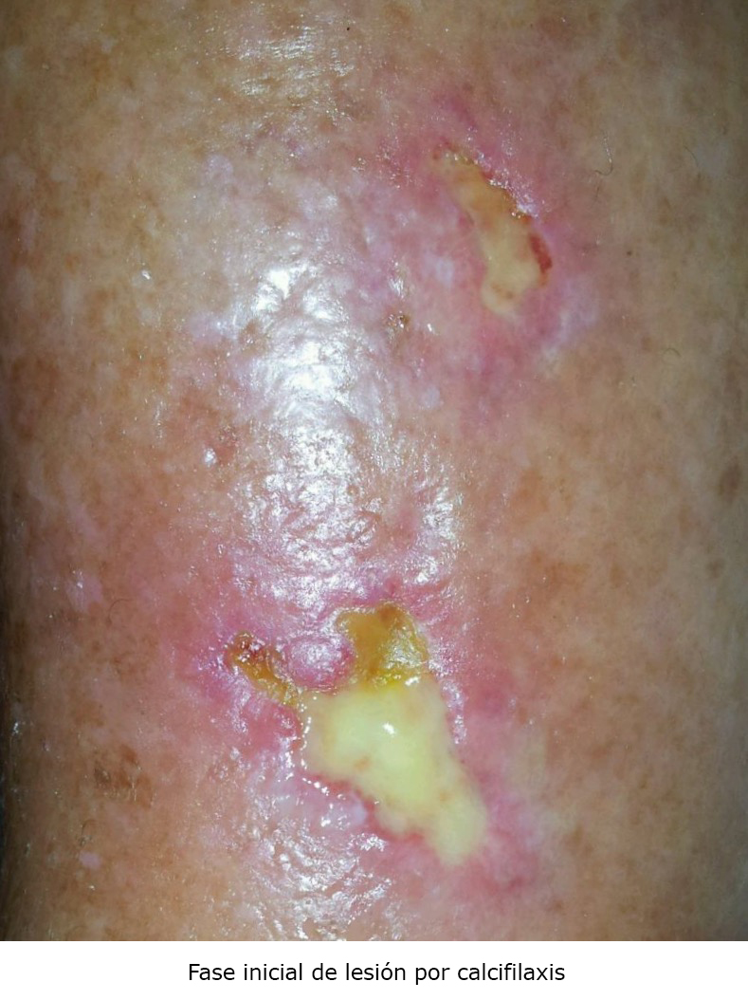
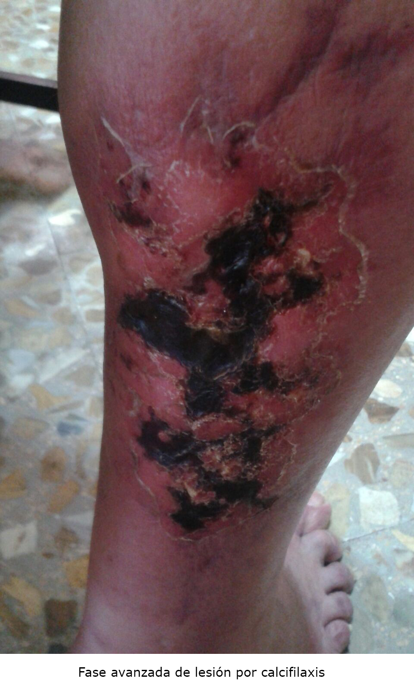

<div class="pages">
  <div data-page="projects" class="page no-toolbar no-navbar">
    <div class="page-content">
    
     <div class="navbarpages">
       <div class="navbar_home_link"><a href="toogle.html"></a></div>
       <div class="navbar_page_center"><b>Especialidades</b></div>
       <div class="menu_open_icon_white"><a href="#" class="open-panel"></a></div>
     </div>
     <div id="pages_maincontent">

          <h2 class="page_subtitle">Calcifilaxis</h2>
          <p><b>Autor/a:</b> Rebeca García Agudo, Nefrología, Hospital La Mancha-Centro, Alcázar de San Juan (C. Real)</p>
          <div class="page_single">         
              <div class="buttons-row">
                    <a href="#tab4" class="tab-link active button">Información</a>
                    <a href="#tab5" class="tab-link button">Clínica</a>
                    <a href="#tab6" class="tab-link button">Diagnóstico</a>
              </div>
              <div class="separadormenu_div"></div>
              <div class="buttons-row">
                    <a href="#tab7" class="tab-link button">Tratamiento</a>
                    <a href="#tab8" class="tab-link button">Bibliografía</a>
              </div>
              
              <div class="tabs-simple">
                    <div class="tabs">
                          
                          <div id="tab4" class="tab active">
                          		<br />
                                <h4>Información</h4>
                                <p class="justify">

                                &bull;&nbsp; También llamada arteriolopatía urémica calcificante, es una patología rara que se presenta en pacientes con ERC, mayormente en diálisis, aunque también en prediálisis y hasta en estadios precoces de la enfermedad (calcifilaxis no urémica). Otros factores de riesgo son: raza blanca, mujer, edad avanzada, obesidad, diabetes, VIH<br /><br />
								&bull;&nbsp; Alta morbilidad (debida al dolor severo, heridas no cicatrizantes, hospitalización, eventos adversos del tratamiento) y mortalidad (45-80% al año, mayor en lesiones ulceradas vs no ulceradas)
                                </p>
                          </div> 
                          
                          <div id="tab5" class="tab">
                          		<br />
                                <h4>Clínica</h4>
                                <p class="nojustify">
                                    &bull;&nbsp; Dolor intenso asociado a lesión cutánea, generalmente ulcerada<br />
									&bull;&nbsp;A veces se palpa la firmeza del tejido celular subcutáneo calcificado
                                </p>
                          </div>
                          <div id="tab6" class="tab">
                          		<br />
                                <h4>Diagnóstico</h4>
                                <p class="nojustify">
                                    &bull;&nbsp; Clínico: según forma de presentación, clínica y factores de riesgo<br />
                                    &bull;&nbsp; Anatomopatológico: diagnóstico definitivo
                                </p>
                                <blockquote class="sin">
                                    &omicron;&nbsp;&nbsp; Biopsia cutánea mediante punch<br />
                                    &omicron;&nbsp;&nbsp; Se caracteriza por isquemia y necrosis cutánea secundaria a la calcificación, fibrodisplasia de la íntima y trombosis de pequeñas arteriolas dermoepidérmicas
                                </blockquote>
                                <p></p>
                                <p></p>
                                <p></p>
                          </div>
                          <div id="tab7" class="tab">
                          		<br />
                                <h4>Tratamiento</h4>
                                <p class="nojustify"> 
                                    <b>1. Médico</b><br /><br />
                                    
                                    &bull;&nbsp;Tiosulfato sódico
                                </p>
                                <blockquote class="sin">
                                    &omicron;&nbsp;&nbsp; 12,5-25 mg, 3 veces a la semana durante 6 meses<br />
                                    &omicron;&nbsp;&nbsp; Prediálisis: al 25% (un vial de 50 ml), IV directo a pasar en 10 minutos<br />
                                    &omicron;&nbsp;&nbsp; Diálisis: al 25% (vial de 50 ml), un vial en los últimos 30 minutos de la diálisis<br />
                                    &omicron;&nbsp;&nbsp; Efectos secundarios: náuseas, hipotensión (valorar disminuir o retirar medicación hipotensora el día de la administración), acidosis metabólica, sobrecarga hídrica
                                </blockquote>
                                <p class="nojustify"> 
                                    &bull;&nbsp;Dolor<br />
                                </p>
                                <blockquote class="sin">
                                    &omicron;&nbsp;&nbsp; Analgésicos habituales (paracetamol, metamizol)<br />
                                    &omicron;&nbsp;&nbsp; Gabapentina, pregabalina, fentanilo
                                </blockquote>
                                <p class="nojustify">     
                                    <b>2. Manejo de factores de riesgo</b><br /><br />
                                    
                                    &bull;&nbsp;Mejorar situación nutricional<br /><br />
                                    &bull;&nbsp;Optimizar la diálisis para lograr los objetivos de adecuación<br />
                                    &bull;&nbsp;Mantener calcio, fósforo y PTH en niveles objetivo (evitar también la supresión de la PTH)<br />
                                    &bull;&nbsp;Retirar suplementos cálcicos (incluido el baño de diálisis alto en calcio), suplementos de vitamina D (valorar la prescripción de cinacalcet) y dicumarínicos<br />
                                    &bull;&nbsp;Valorar la necesidad de bifosfonatos (pamidronato, etidronato)<br /><br />
                                    
                                    <b>3. Curas de enfermería</b><br /><br />
                                    
                                    &bull;&nbsp;Cada 48-72 horas si secreción, semanal si no<br />
                                    &bull;&nbsp;Valorar signos de infección por la necesidad de cultivo y antibioterapia (ej. amoxicilina/clavulánico)<br />
                                    &bull;&nbsp;Limpiar con suero fisiológico y Prontosan&copy; solución si restos<br />
                                    &bull;&nbsp;Secar con gasas<br />
                                    &bull;&nbsp;Aplicar Prontosan&copy; gel<br />
                                    &bull;&nbsp;Tapar con parche hidrocoloide (del tipo Confeel&copy; Plus Transparent)<br />
                                    &bull;&nbsp;Cubrir con vendaje de algodón y venda elástica

                                </p>
                          </div>
                          <div id="tab8" class="tab">
                          		<br />
                                <h4>Bibliografía</h4>
                                <p class="justify">
                                    <b>1. </b>Nigwekar SU, Kroshinsky D, Nazarian RM, Goverman J, Malhotra R, Jackson VA et al. Calciphylaxis: risk factors, diagnosis, and treatment. Am J Kidney Dis 2015;66(1):133-46.<br /><br />
                                    <b>2. </b>Succesful treatment of calciphylaxis with intravenous sodium thiosulfate. Cicone JS, Petronis JB, Embert CD, Spector DA. Am J Kidney Dis 2004;43(6):1104-8.<br /><br />
                                    <b>3. </b>Uso de bifosfonatos en la enfermedad renal crónica. Torregrosa JV, Ramos AM. Nefrología 2010;30(3):288-96.<br /><br />
                                    <b>4. </b>Multidisciplinary approach to calcific uremic arteriolopathy. Nigwekar SU. Dialysis and Transplantation 2015;24:1-7.<br /><br />
                                    <b>5. </b>Treatment of severe metastatic calcification and calciphylaxis in dialysis patients. Goel SK, Bellovich K, McCullough PA. Int J Nephrol 2010;2011:1-5.<br /><br />
                                    <b>6. </b>Epidemiology, pathophysiology, and therapy of calciphylaxis. Dtsch Arztebl 2007;104(50):3481-5.<br /><br />
                                    <b>7. </b>Calciphylaxis presenting in early chronick kidney disease with mixed hyperparathyroidism. Int J Nephrol Renovasc Dis 2011;4:157-60.

                                </p>
                          </div>
                    </div>
              </div>        
          </div>     
      </div>  
    </div>
  </div>
</div>